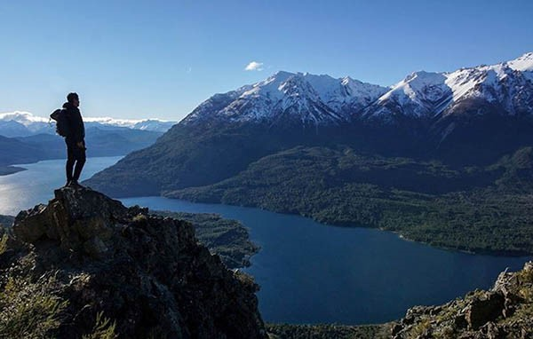
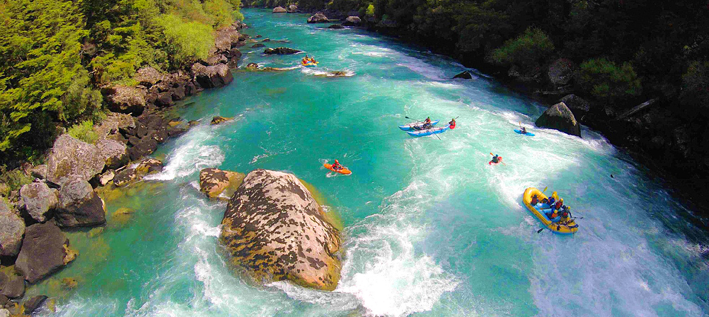
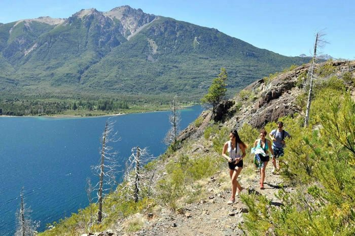

La geografía en la que se asienta la ciudad de Epuyen ofrece diversas alternativas para disfrutar de cabalgatas memorables. En la entrada de Epuyen, en un ambiente predominantemente rural, se ubica la chacra Los Álamos, tradicional organizador de las excursiones a caballo que recorren la zona del Valle Chico y las estribaciones del cerro Nahuel Pan. Pensadas para toda la familia, las cabalgatas varían en su duración desde paseos sencillos y de baja exigencia de alrededor de una hora hasta jornadas completas que exigen a los jinetes mayor tiempo y disposición. En ocasiones especiales se realizan también excursiones nocturnas bajo la luz de la luna llena. La tropilla está conformada por caballos que se caracterizan por su docilidad y que están habituados a recorrer este tipo de geografía, así que no es necesario tener experiencia previa, sólo hace falta llevar un calzado cómodo y un buen abrigo. + info...
Durante el recorrido se accede a distintos puntos panorámicos desde donde se pueden observar las laderas boscosas y como islas que emergen del verde, las cumbres agudas y de acuerdo al momento del año, cubiertas de nieve. Tras recorrer ambientes totalmente prístinos se llega a una bella laguna de intenso color esmeralda, en la que flotan los bloques de hielo que se desprenden del glaciar, o totalmente congelada durante el invierno. El primer tramo transcurre en un ambiente de bosque Valdiviano, luego continúa bordeando un arroyo de montaña hasta su misma naciente y finalmente la Laguna del Antiguo, ubicada a los pies del Glaciar Torrecillas. Allí se podrán apreciar las cuencas donde comenzó a acumularse la nieve y formarse el hielo glaciar, ocurrida durante la última Glaciación hace más de 24.000 años. Durante el recorrido se podrán observar alerces, tineos, cipreses, coihues, lengas, cañas y otros ejemplares propios de la selva valdiviana. También existe la posibilidad de encontrarse con los cóndores y sorprenderse con el sonido que causa los desprendimientos de hielo + info...
El Río Epuyen presenta una dificultad de clase II y III, y es el lugar ideal para realizar rafting sin necesidad de tener experiencia previa. Las excursiones parten de Esquel y cuentan con guías y equipos apropiados para aprovechar al máximo toda la jornada. Se puede realizar una bajada de 2 horas o una excursión de día completo, recorriendo unos 17 kilómetros. Generalmente cada guía le da su toque diferente, proponiendo actividades que suman a la diversión, como poder tirarse al agua y nadar, saltar desde las rocas o, para los más osados saltar desde el puente, dando de esta forma un cierre a pura adrenalina. Otra opción para deportistas con experiencia es la que recorre 10 kilómetros con dificultad clase IV y termina en la frontera con Chile. + info...
En tu tiempo libre en nuestra ciudad ya sea una tarde o un par de horas, podés optar por recorrerla con las zapatillas puestas, pausadamente, competitivamente o simplemente caminando y disfrutar de sus paisajes urbanos mientras hacés una actividad saludable. No solo vas a encontrar un paisaje único, sino también accesos fáciles y seguros para vivir esta experiencia en nuestra ciudad como si fueras parte de ella. En Esquel contamos con 4 circuitos aeróbicos de diferentes distancias y exigencias, que te ofrecen vistas del valle, los ciruelos que adornan el boulevard y hasta el paso del Viejo Expreso Patagónico, La Trochita. + info...